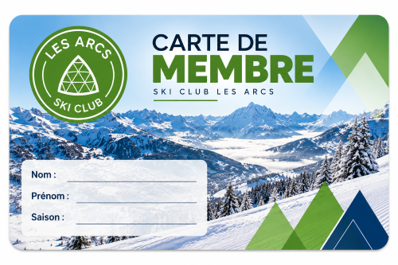
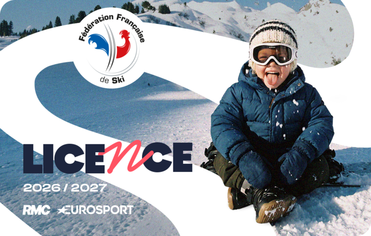
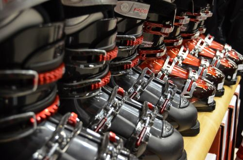
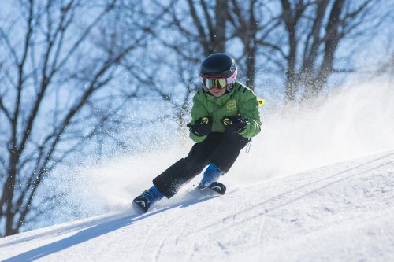
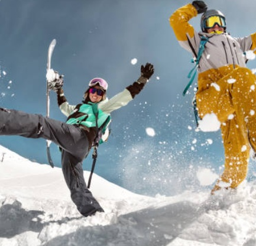
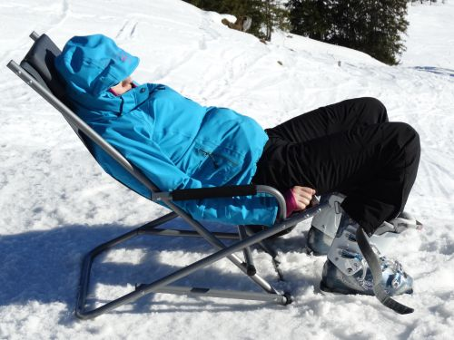
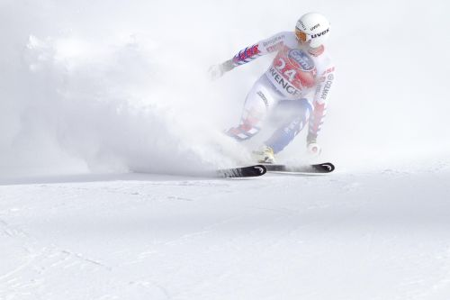

Adhésion
Entrer au Ski Club ?
Tout savoir sur les conditions d'entrée au Ski Club.
Vous ou votre enfant souhaitez nous rejoindre, tout est expliqué ici.

Entrer au Ski Club ?
Tout savoir sur les conditions d'entrée au Ski Club.

Quelle licence choisir ?
Tout savoir sur les licences FFS et les garanties associées.
plus d'infos →
Quels coûts?
Frais d'inscription, de cotisation, de licences et réductions.
plus d'infos →

Bien s'équiper...
Skis, chaussures, casque, protection dorsale, combinaison.
plus d'infos →
L'entrée au ski club pour les enfants de la catégorie U8 est conditionnée par une selection.
Le test de sélection a lieu en fin de saison (deuxième ou troisième week-end d'avril). Il est organisé par les coachs du ski club.
L'objectif des coachs est de former un groupe homogène, composé de skieurs avec un minimum d'autonomie
et capables de "passer partout".
Nombre de places disponibles: Entre 8 et 12 enfants
La prochaine sélection U8 (enfants nés en 2020) aura lieu le samedi 10 ou samedi 17 avril 2027,
pour une entrée au Ski Club pour la saison 2027/2028.
Suivez-nous sur le site internet ou sur les réseaux pour la date exacte des sélections.
Les places en U10 1ère année et en U10 2ème année sont attribuées en priorité aux skieurs du Ski Club,
respectivement les U8 et U10 1ère année de l'année précédente.
En fonction des effectifs constitués, il est possible d'intégrer l'un de ces deux groupes de cette catégorie.
Il n'existe pas de test de sélection programmé pour cette catégorie, aussi, si vous souhaitez inscrire votre enfant en U10,
un test de selection sera organisé en fonction des demandes.
Nombre de places disponibles: variable
Contactez-nous pour obtenir plus d'informations pour une inscription en U10.
Les groupes étant constitués, il n'est pas possible d'intégrer de nouveaux skieurs dans l'une de ces catégories.
Pour les cas exceptionnels, comme un déménagement impliquant un changement de Ski Club, une éventuelle intégration peut être évaluée.
Merci de prendre contact avec nous si vous êtes dans ce cas.
Vous souhaitez être un membre actif de notre Ski Club. Pour devenir adhérant, rien de plus simple.
Prenez votre licence-assurance (Loisir ou Compétition) directement sur le site de la FFS en choississant notre club: S.C LES ARCS BOURG ST MAURICE.
Votre cotisation Club sera inclus dans votre licence.

Pour glisser en toute sécurité et découvrir de multiples activités dans un club FFS, seul, entre amis ou en famille.
Qui est concerné ?
- Catégorie U8
- Sénior

Une licence loisir à tarif préférentiel pour tous les membres d'une même famille résidant sous le même toit.
Qui est concerné ?
- Catégorie U8
- Parents d'enfant U8

Pour partager sa passion et prendre part à la vie associative des clubs FFS.
Qui est concerné ?
- Membre du Bureau du Ski Club Les Arcs

Pour se mesurer aux autres, se dépasser, relever de nouveaux défis et goûter à l'adrénaline de la compétition.
Qui est concerné ?
- Catégories U10 / U12 / U14 / U16 / FIS
- Sénior
| Type de contribution | U8 | U10 | U12 | U14 | U16 | FIS |
|---|---|---|---|---|---|---|
| Participation | 400 € | 450 € | ||||
| Mécénat | N/A | N/A |
| Type de licence* | Jeune** | Adulte** |
|---|---|---|
| Licence Loisir Individuelle | 43,80 € | 49,40 € |
| Licence Loisir Famille | 153,60 € | Licence Dirigeant | - | 60 € | Licence Compétiteur | 63,40 € | 103,90 € |
| Type de cotisation | Jeune** | Adulte** |
|---|---|---|
| Pour une Lic. Loisir Individuelle | 15,50 € | 15,70 € |
| Pour Lic. Loisir Famille | 23,00 € | Pour une Lic. Dirigeant | - | 0 € | Pour une Lic. Compétiteur | 6,60 € | 8,40 € |